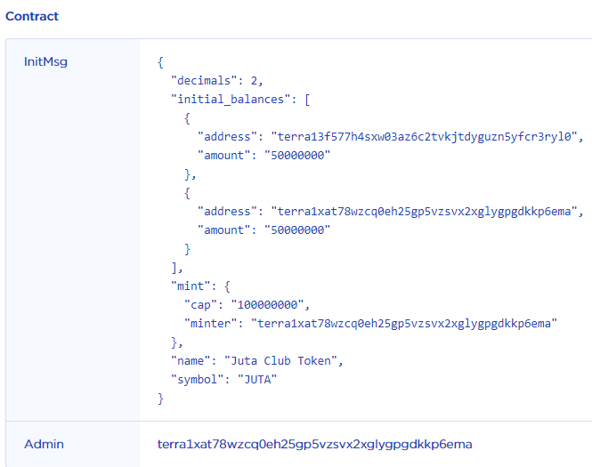
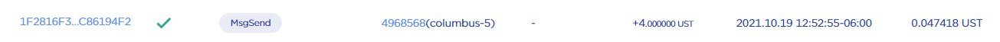
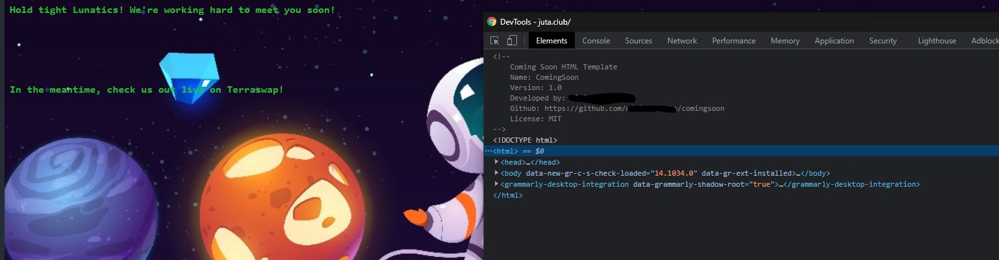

Be very careful when trading random cw20 tokens on terraswap.
$JUTA popped up this week so I decided to take a look to see what I could find about this new token.
The thing I did was to look up the CW20 on Terra Finder and Extraterrestrial Finder.
You can see here that this contract was instantiated by the admin address at the bottom. ( This address has also kindly given themselves half of the minted supply).

As I'm everybody knows, it sometimes can be a pain to get the initial UST for gas to instantiate your scam coin's contract right? That gas has to come from somewhere!
Lets keep following the trail.

Now this is where it gets interesting. I'll spare you most of the boring details but it's becoming very clear to us now that this individual is creating many scan tokens.
Here is a small list of these scam coins:
- Vegas Token - "Vagas" (didn't even spell it right)
- Woffff Token
I will spare you the whole list but it is just a matter of digging through transactions. So now that we know this person has created these scam tokens the next question
is what do they stand to gain?
Let's use Woffff Token to understand:
1. Create Scam Coin Contract
2. Instantiate Contract
3. Create Terraswap Pair
4. Provide liquidity
5. Eventually Dump Token
Lets Wrap Things Up:
Juta Club Especially in a bull market, we are very eager to FOMO into the next opportunity. But let's at least understand the risks of doing so.
I believe that this individual is a curious mind with misplaced intentions. He had done very little to cover his footprints.

With a little investigation into $juta I was able to uncover a number of similar coins.
William Chen has a great video outlining an even more malicious CW20 contract so you should all check it out here.
Also it's worth noting that currently, we cant get the source code for CW contracts on terra. Contracts are compiled and then uploaded as wasm bytecode.
This is even more reason not to interact with these tokens. They can perform malicious actions without our knowledge.